Papua (New Guinea) Tours & Expeditions
Travel information, facts about aboriginal tribes, photos, expedition schedule and more.
New Guinea Island, and especially West Papua (Irian Jaya) is one of the last places on the Earth, where it is still possible to meet the primitive people of the Stone Age. Yes, there are places where people have been living the same way since the Neolithic Era. They use stone and bone tools, they hunt with bows and arrows, …
.JPG)
Chief of the Kombai tribe – most primitive tree people on Papua – Irian Jaya. A tribeman repairing a stone axe) Photo©JahodaPetr.com (Papua guide)
.JPG)
Mrs. Jitka in the Tree people territory – Kombai tribe – most primitive tree people on Papua – Irian Jaya Photo©Roman Heřman
Unbelivable? Not there. It is actually quite common. You can join one of our expeditions and see it with your own eyes.
You have a unique opportunity to go there with us to convince yourself that it is possible to travel back in time.
Papua – Primitive Tribes – Tours & Expeditions
Indonesian government does its best to civilize Papua rapidly. Don’t hesitate too long, it could be too late. We offer you not only adventure, but also experience you’ll never forget…
Carstensz Pyramid (Puncak Jaya) – 4884 m – Top of Papua
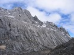
Carstensz Pyramid (Puncak Jaya) is the highest mountain of not only the New Guinea Island, but also of Australia and Oceania. It lies in the Snow Mountains of the Indonesian province Papua (former Irian Jaya). The ascent to the summit …
…more about Carstensz Pyramid…
Papua – Primitive Tribes
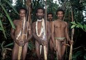
There are now many well-known topics unmistakably linked to Papua – “the island of curly people”: Tree people Korowai, Kombai, and the Yali mountain tribe. There is the Wano tribe, which is famous …
…more about Tribes on Papua…
Papua – First Contact expedition
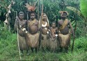
In Papua you can still find absolutely primitive cultures technology development of which ended in the Neolithic period (younger Stone Age). Most of these tribes live in the western part of the island, but …
…more about first contact expeditions…
Korowai & Kombai – Papua Tree people
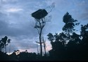
The tree people, Korowai and Kombai, live in the basin of the Brazza River in the vast lowland jungles. This is situated in the foothills of the Jayawijaya mountain range, which is in the southwest part of the New Guinea Island in the Indonesian province Papua (Irian Jaya)…
…more about Korowai & Kombai …
Asmat – the most dreaded canibals
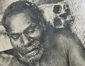
Asmat. A word that long scared people. Asmat is a word that became a synonym for cannibals. Asmat is a tribe whose members in the time of war ate brains of their enemies mixed with sago worms from their halved skulls…
…more about Asmat tribe…
Yali Tribe – Papua pygmey cannibals
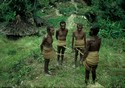
Yali tribe is most likely the smallest of Papuan nations. I wrote “likely” because I am convinced that not all the nations living in New Guinea (including Irian Jaya), have yet been discovered. Yalis were discovered no sooner than in 1976…
…more about Yali tribe…
Mamberamo – Papua – the forbidden river
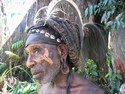
The Mamberamo River is situated in the east-west forest of Papua. For many years this area has been almost totally closed off. Many maps mark the basin of the river Mamberamo as „Strictly prohibited territory“…
…more about Mamberamo river…
Papua – Dani Tribe, Wamena & Baliem Valley
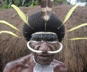
Baliem Valley and the Dani tribe waited a long time to be discovered. Papuan highland belongs to one the most recently explored New Guinea areas. The tall mountains in west Papua (Irian Jaya) were generally considered …
…more about Baliem Valley and there is also a dedicated page about Lani in Baliem Valley…
Goroka & mt. Hagen show – Papua
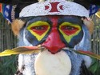
Goroka and Mount Hagen. Every year, Papua New Guinea becomes the scene for the most fantastic and beautiful of world’s festivals. The most famous ones take place in the cities of Goroka and Mount Hagen…
…more about Papua festivals in Goroka and Mt. Hagen…
Huli Tribe (the wig-men) – Papua
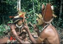
The Huli tribe (known as the “wig-men”) made their home not far from Tari city, which is situated in the central highland of Papua New Guinea. Hulis are mostly civilized, but approximately one tenth of them lives a traditional life…
…more about Huli Tribe…
Asaro Mudmans – Papua
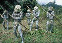
Asaro Mud Men are highland people. Their „clay heads“ culture developed from the need of defensive combat as a war trick played on the enemy.
…more about Asaro Mud Men …